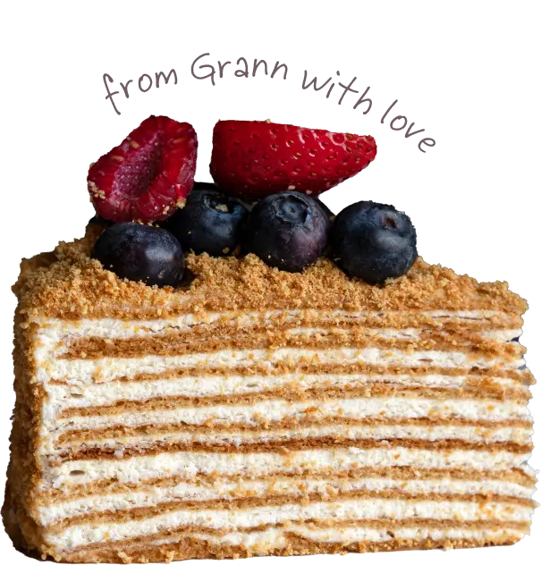

<section class="why-about-me">
    <div class="container why-about-me-container">
    <h1 class="why-title">Чому саме Grann?</h1>
        
    <ul class="why-list">
        <li class="why-iteam">
            <h2 class="why-subtitle">ВСІ ІНГРЕДІЄНТИ СВІЖІ ТА ЯКІСНІ!</h2>
            <p class="why-text">Я замовляю продукти тільки у тих постачальників, які мають сертифікати якості.</p>
        </li>
        <li class="why-iteam">
            <h2 class="why-subtitle">МОЖЛИВІСТЬ ЗАМОВИТИ ДЕСЕРТ ЗГІДНО ВАШИХ ПОБАЖАННЬ</h2>
            <p class="why-text">Якщо з якихось причин ви не вживаєте окремі продукти десерту, є можливість зробити замовлення згідно ваших побажаннь.</p>
        </li>
        <li class="why-iteam">
            <h2 class="why-subtitle">ЗРУЧНА ВАГА ТОРТУ</h2>
            <p class="why-text">Не обов'язково чекати на свято, щоб замовити смачненьке. Наша кондитерська робить мініторти і десерти.</p>
            <p class="why-text">Мінімальна вага замовлення:Наполеон і медовик - від 0,5 кг.Мусові торти - від 0,8 кг.</p>
        </li>
    </ul>
    </div>
</section>